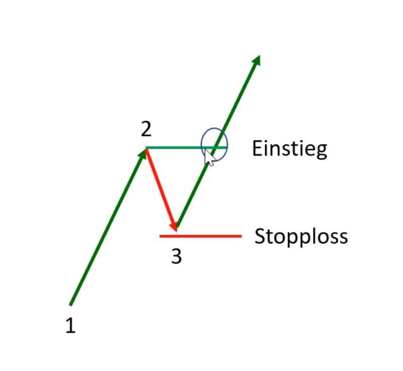

MT
3/4 BP
BS
BO
2LM
CP

Gibt es einen deutlichen Trend mit steigenden Hochs und Tiefs?
Liegt der Kurs unter einem wichtigen Resistance Level?
Befindet sich die Aktie in einem aktuell gefragten Sektor nach Branchenrotation?
Hat die Aktie Relative Strength (Long)?
Gibt es ein 1-2-3 Setup mit Ross-Haken auf einer tieferen Zeitebene?
Check
Reset
Calculator Your Share Size
Rating:
-